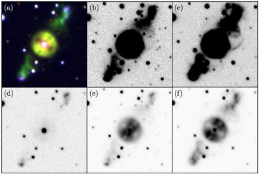
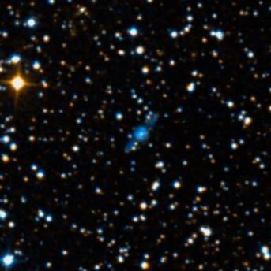
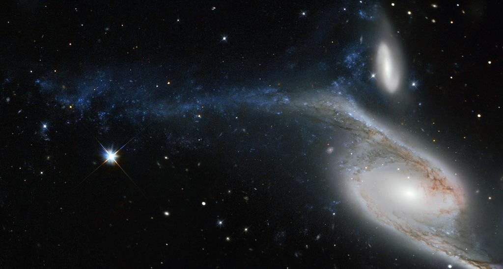

NGC 6872, this Condor soars tonight
- Name: NGC 6872 = ESO 073-032 = VV 297a = AM 2011-705 = PGC 64413
- RA: 20h 16m 56.9s
- Dec: -70° 46' 04"
- Constellation: Pavo
- Type: SB(s)b pec
- Size: 6.0'x1.7'
- Magnitudes: V = 11.8, B = 12.7
- Surf Br: 14.2 mag/arcmin²
On cool winter evenings in the southern hemisphere, The Condor Galaxy NGC 6872 – a remarkable gas-rich barred spiral – unfurls its enormous wings over 520,000 light-years from tip to tip. This monster is accompanied by a much smaller lenticular IC 4970, which is tidally interacting. Both galaxies are flying within the Pavo I group, a flock of a dozen or more at a distance of roughly 200 million light-years.

John Herschel discovered NGC 6872 in late June 1835 from the Cape of Good Hope, though missed its companion, IC 4970. The latter galaxy was found photographically on Harvard Observatory plates taken in Arequipa, Peru in 1900. But it was actually discovered earlier by Joseph Turner, a visual observer on the 48-inch Great Melbourne Telescope. He wrote in August, 1881 (in his logbook) "there is a small round nebula 1' north of [NGC 6872] not mentioned by Herschel." Turner's discovery was never published and he failed to receive credit in the IC. I had to dig out this discovery in his handwritten logbooks which are available on the National Archives of Australia website
In 2014, Rafael Eufrasio (NASA Goddard) and colleagues analyzed the star-formation regions in NGC 6872 in the far-ultraviolet to near-infrared wavelengths. They find most of the star formation in The Condor takes place in the extended arms, with very little star formation in the central 15,000 light-years of the galaxy. Furthermore, there is a trend of increasing star formation activity with distance from the nucleus of the galaxy.
The northeastern arm is the most disturbed and contains numerous bluish star-forming regions. Ultraviolet images show a blue object at the far end that appears to be a tidal dwarf. The gravitational interaction of NGC 6872 and IC 4970 may have spawned this new dwarf galaxy which is brighter in ultraviolet than other regions of the galaxy, a sign of its hot, massive stars.

A stellar bridge connects IC 4970 with the Condor's northern tidal arm at a break point referred to as the 'knee'. IC 4970 may not look impressive – it's only 1/10 to 1/5 as massive as NGC 6872 – but hosts an obscured active galactic nucleus (Seyfert 2). Astronomers propose a near collision with NGC 6872 drove gas to IC 4970's supermassive black hole and fueled the AGN.
The interaction with IC 4970 may not be mainly responsible for shaping the Condor’s arms. A second culprit is probably NGC 6876, a giant elliptical 9' to the southeast and the brightest member of Pavo I. The Condor passed close to this galaxy some 130 million years ago, which resulted in the longest-known X-ray trail spanning the full 8.7' that connects the two galaxies.
NGC 6872 is visible in an 8-inch from the southern hemisphere, though IC 4970 needs a somewhat larger aperture. I've viewed the pair a few times in an 18-inch from Australia and in 2017 I took a look at NGC 6872 through a 30-inch dob at the OzSky star party. At 300x, it was a prominent oval, tipped 2:1 to the southwest toward a 10.4-magnitude star. The core was bright and elongated and held a vivid nucleus. The arms appeared as thin gossamer wings extending to the knee of the northern arm and beyond the bright star on the south side. IC 4970 was a pretty bright N-S oval, 0.4'x0.25', and contained a very small bright nucleus.
If you haven't seen this magnificent Condor, or other treats in Pavo such as the thin edge-on IC 5052, NGC 6752 (4th brightest globular in the sky) and NGC 6744 (a huge barred spiral) - the latter two being featured in past OOTWs by Wouter - you now have more reasons to plan a trip to the southern hemisphere!
As always,
"Give it a go and let us know!
Good luck and great viewing!"

Sources:
2014 paper by Eufrasio+: "Star Formation Histories Across the Interacting Galaxy NGC 6872, the Largest-Known Spiral"
https://iopscience.iop.org/article/10.1088/0004-637X/795/1/89/pdf
2009 paper by Machacek+: "A Multiwavelength View of Star Formation in Interacting Galaxies in the Pavo Group"
https://iopscience.iop.org/article/10.1088/0004-637X/691/2/1921/pdf
2008 paper by Machacek+: "The Active Nucleus of IC 4970: A Nearby Example of Merger-Induced Cold-Gas Accretion"
https://iopscience.iop.org/article/10.1086/525015/pdf
2005 paper: "The star cluster population in the tidal tails of NGC 6872"
https://www.aanda.org/articles/aa/pdf/2005/19/aa2203-04.pdf
2005 paper by Machacek+: "XMM-Newton observation of an X-ray trail between the spiral galaxy NGC 6872 and the central elliptical galaxy NGC 6876 in the Pavo group"
https://iopscience.iop.org/article/10.1086/431944/pdf